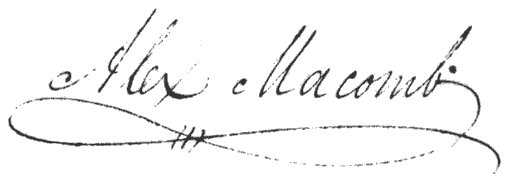

|
H.Q. Plattsburgh, Sept. 15, 1814
SIR-I have the honor to
communicate, for the information of the war department, the particulars
of the advance of the enemy into the territory of the U. States, the
circumstances attending the siege of Plattsburgh, and the defence of the
posts entrusted to my charge.
The Governor-General of the
Canadas, Sir George Prevost, having collected all the disposable force
of Lower Canada, with a view of conquering the country as far as
Crown-point, and Ticonderoga, entered the territory of the U. States, on
the first of the month, and occupied the village of Champlain- there
avowed his intentions, and issued orders and proclamations, tending to
dissuade the people from their allegiance, and inviting them to furnish
his army with provisions. He immediately began to impress the waggons,
and teams, in the vicinity, and loaded them with his heavy baggage and
stores; from this, I was persuaded he intended to attack this place. I
had but just returned from the lines, where I had commanded a fine
brigade, which was broken up to form the division of Maj. Gen. Izard,
ordered to the westward. Being senior officer, he left me in command;
and, except the four companies of the 6th regiment, I had not an
organized battalion among those remaining; the garrison was composed of
convalescents, and the recruits of the new regiments- all in the
greatest confusion, as well as the ordnance and stores, and the works in
no state of defence. To create an emulation and zeal, among the officers
and men, in completing the works, I divided them into detachments, and
placed them near the several forts- declaring, in orders, that each
detachment was the garrison of its own works, and bound to defend it to
the last extremity.
The enemy advanced cautiously,
and by short marches, and our soldiers worked day and night; so that, by
the time he made his appearance before the place, we were prepared to
receive him.
Gen. Izard renamed the
principal work Fort Moreau; and, to remind the troops of the actions of
their brave countrymen, I called the redoubt, on the right, fort Brown;
and that on the left, fort Scott; besides these three works, we have two
block-houses, strongly fortified.
Finding, on examining the
returns of the garrison, that our force did not exceed fifteen hundred
men for duty; and well informed that the enemy had as many thousand; I
called on Gen. Mooers, of the New-York militia, and arranged with him,
plans for bringing forth the militia, en masse. The inhabitants
of the village fled, with their families and effects, except a few
worthy citizens, and some boys, who formed themselves into a party,
received rifles, and were exceedingly useful.
By the 4th of the month, Gen.
Mooers collected about 700 militia, and advanced 7 miles on the Beekman
Town road, to watch the motions of the enemy, and to skirmish with him
as he advanced- also, to obstruct the roads with fallen trees, and to
break up the bridges. On the lake road, at Dead-creek bridge, I posted
200 men, under Capt. Sproul, of the 13th regiment, with orders to
abattis the woods, to place obstruction in the road, and to fortify
himself; to this party I added two field pieces. In advance of that
position, was Lieut. Col. Appling, with 110 riflemen, watching the
movements of the enemy, and procuring intelligence. It was ascertained
that, before daylight on the 6th, the enemy would advance in two
columns, on the two roads before mentioned, dividing at Sampson's, a
little below Chazy village. The column, on the Beekman Town road,
proceeded most rapidly; the militia skirmished with their advanced
parties, and, except a few brave men, fell back most precipitately in
the greatest disorder, notwithstanding the British troops did not deign
to fire upon them, except by their flankers and advanced patroles. The
night previous, I ordered Major Wool to advance, with a detachment of
250 men, to support the militia, and set them an example of firmness;
also Captain Leonard, of the light artillery, was directed to proceed
with two pieces, to be on the ground before day- yet he did not make his
appearance until 8 o'clock, when the enemy had approached within two
miles of the village; with his conduct, therefore, I am not well
pleased. Major Wool, with his party, disputed the road with great
obstinacy, but the militia could not be prevailed on to stand,
notwithstanding the exertions of the General, and staff officers,
although the fields were divided by strong stone walls, and they were
told that the enemy could not possibly cut them off. The state dragoons,
of New-York, wear red coats; and, they being on the heights to watch the
enemy, and fearing his getting in their rear. Finding the enemy's
columns had penetrated within a mile of Plattsburgh, I dispatched my
aid-de-camp, Lieut. Root, to bring off the detachment at Dead-creek, and
to inform Lieut. Col. Appling that I wished him to fall on the enemy's
right flank; the Colonel fortunately arrived just in time to save his
retreat, and to fall in with the head of a column debouching from the
woods; here he poured in a destructive fire from his riflemen at rest,
and continued to annoy the column until he formed a junction with Major
Wool. The field pieces did considerable execution among the enemy's
columns. So undaunted, however, was the enemy, that he never
deployed in his whole march, always pressing on in column. Finding that
every road was full of troops, crowding on us on all sides, I ordered
the field pieces to retire across the bridge, and form a battery for its
protection, and to cover the retreat of the infantry, which was
accordingly done, and the parties of Appling and Wool, as well as Sproul,
retired alternately, keeping up a brisk fire, until they got under cover
of the works. The enemy's light troops occupied the houses near
the bridge, and kept up a constant firing from the windows and
balconies, and annoyed us much- I ordered them to be driven out with hot
shot, which soon put the houses in flames, and obliged these
sharp-shooters to retire. The whole day, until it was too late to see,
the enemy's light troops endeavored to drive our guards from the bridge;
but they suffered dearly for their perseverance. An attempt was also
made to cross the upper bridge, where the militia handsomely drove them
back.
The column which marched by the
lake road, was much impeded by obstructions, and the removal of the
bridge at Dead-creek; and, as it passed the creek and beach, the gallies
kept up a lively and galling fire.
Our troops being now all on the
south side of the Saranac, I directed the planks to be taken off the
bridges, and piled up in the form of breast-works, to cover our parties
intended for disputing the passage, which afterwards enabled us to hold
the bridges against very superior numbers. From the 7th to the 11th, the
enemy was employed in getting his battering train, and erecting his
batteries and approaches, and constantly skirmishing at the bridges and
fords. By this time, the militia of New-York, and volunteers from
Vermont, were pouring in from all quarters. I advised Gen. Mooers to
keep his force along the Saranac, to prevent the enemy crossing the
river, and to send a strong body in his rear, to harass him day and
night, and keep him in continual alarm. The militia behaved with great
spirit after the first day, and the volunteers from Vermont were
exceedingly serviceable. Our regular troops, notwithstanding the
constant skirmishing, and repeated endeavors of the enemy to cross the
river, kept at their work, day and night, strengthening their defences,
and evinced a determination to hold out to the last extremity.
It was reported that the enemy
only awaited the arrival of his flotilla, to make a general attack.
About 8, on the morning of the 11th, as was expected, the flotilla
appeared in sight, round Cumberland Head, and at 9, bore down and
engaged our flotilla, at anchor, in the bay, off this town. At the same
instant, the batteries were opened on us, and continued throwing
bomb-shells, shrapnells, balls, and Congreve rockets, until sun-set,
when the bombardment ceased; every battery of the enemy being silenced
by the superiority of our fire. The naval engagement lasted 2 hours, in
full view of both armies; three efforts were made, by the enemy, to pass
the river at the commencement of the cannonade and bombardment, with a
view of assaulting the works, and had prepared for that purpose an
immense number of scaling ladders; one attempt was made to cross at the
village bridge; another at the upper bridge; and a third, at a ford,
about three miles from the works;- at the first two he was repulsed by
the regulars, at the ford, by the brave volunteers and militia- where he
suffered severely in killed, wounded, and prisoners, a considerable body
having passed the stream, but were either killed, taken, or driven
back.- The woods, at this place, were very favorable to the operations
of our militia; a whole company of the 76th regiment was here destroyed-
the three Lieutenants, and 27 men, prisoners; the Captain, and the rest,
killed.
I cannot forego the pleasure of
here stating the gallant conduct of Captain McGlassin, of the 15th
regiment, who was ordered to ford the river, and attack a party constructing
a battery on the right of the enemy's line, within 500 yards of fort
Brown- which he handsomely executed, at midnight, with 50 men; drove off
the working party, consisting of 150, and defeated a covering party, of
the same number- killing one officer, and 6 men, in the charge, and
wounding many. At dusk, the enemy withdrew his artillery from the
batteries, and raised the siege; and, at 9, under the cover of the
night, sent off all the heavy baggage he could find transport for, and
also his artillery- at 2, the next morning, the whole army precipitately
retreated, leaving the sick and wounded to our generosity, and the
Governor left a note with a surgeon, requesting the humane attention of
the commanding General. Vast quantities of provision were left behind,
and destroyed; also, an immense quantity of bomb-shells, cannon balls,
grape shot, ammunition, flints, &c. &c.; intrenching tools of
all sorts, also tents, and marquees. A great quantity has been found in
the ponds and creeks, and buried in the ground- and a vast quantity
carried off by the inhabitants. Such was the precipitance of his
retreat, that he arrived in Chazy, a distance of 8 miles, before we had
discovered he had gone. The light troops, volunteers, and militia,
pursued immediately, on learning his flight; and some of the mounted men
made prisoners 5 dragoons, of the 19th, and several others of the rear
guard. A continued fall of rain, and a violent storm, prevented further
pursuit. Upwards of 300 deserters have come in, and many are hourly
arriving.
The conduct of the officers,
non-commissioned officers, and soldiers, of my command, during this
trying occasion, cannot be represented in too high terms; and I feel it
my duty to recommend, to the particular notice of government, Lieut.
Col. Appling, of the 1st rifle corps; Major Wool, of the 29th; Major
Totten, of the corps of engineers; Captain Brooks, of the artillery;
Captain McGlassin, of the 15th; Lieutenants De Russy and Trescott, of
the corps of engineers; Lieutenants Smyth, Mountford, and Cromwell, of
the artillery; also, my aid, Lieut. Root, who have all distinguished themselves,
by their uncommon zeal and activity, and have been greatly instrumental
in producing the happy and glorious result of the siege.
I have the honor, &c.

ALEX. MACOMB.
Hon. Sec. War.
The loss of the enemy, in
killed, wounded, prisoners, and deserters, since his first appearance,
cannot fall short of 2,500, including many officers, among whom is
Colonel Wellington, of the Buffs.
Return of killed and
wounded, on the American side, during the skirmishing and bombardment
above described: Killed, 37- wounded, 66- missing, 20- total,
123.
The principal officers of the
British army, under Sir G. Prevost, are named by Gen. Macomb in the
above account; and the particular description of forces, how many of
each king, and the aggregate- which amounts to FOURTEEN THOUSAND.
|